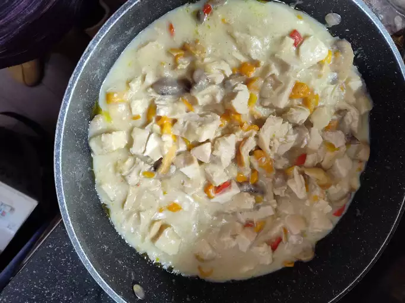
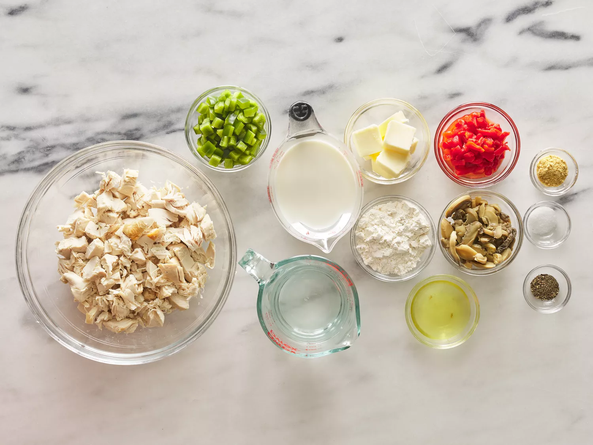
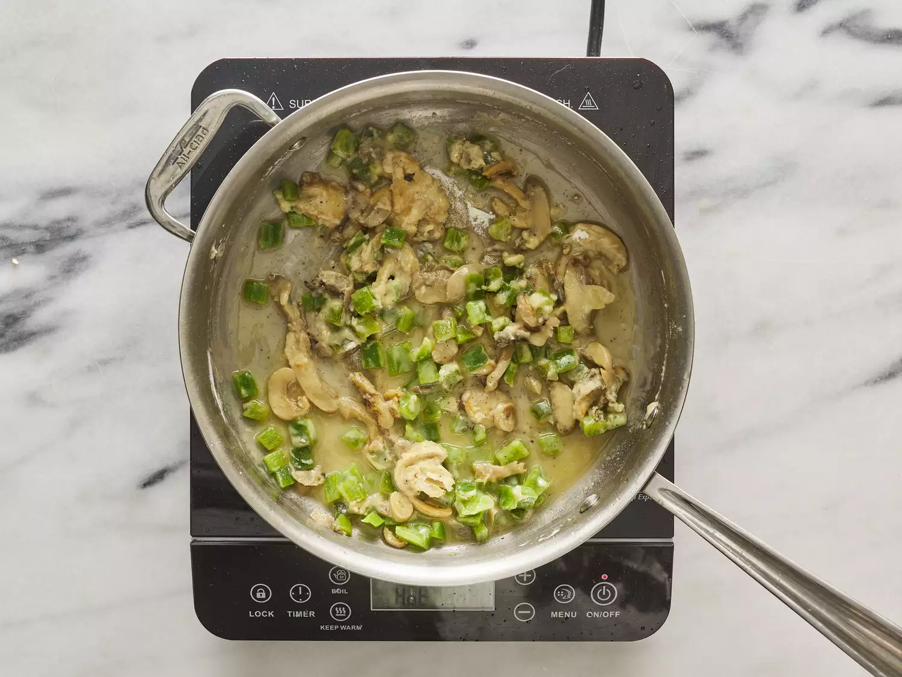
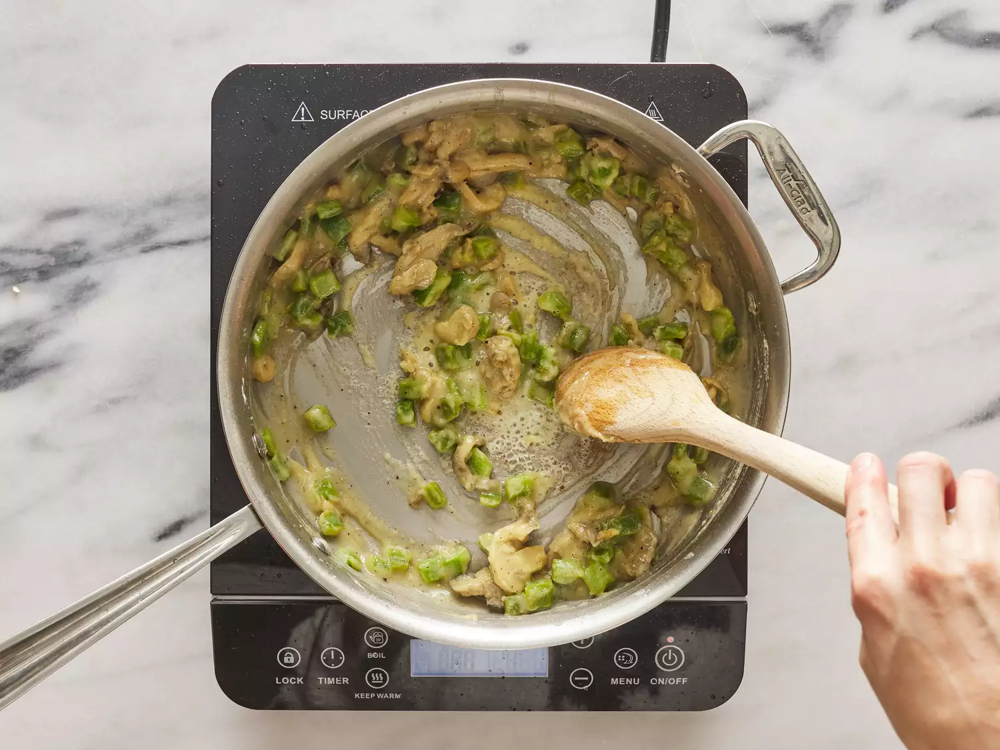
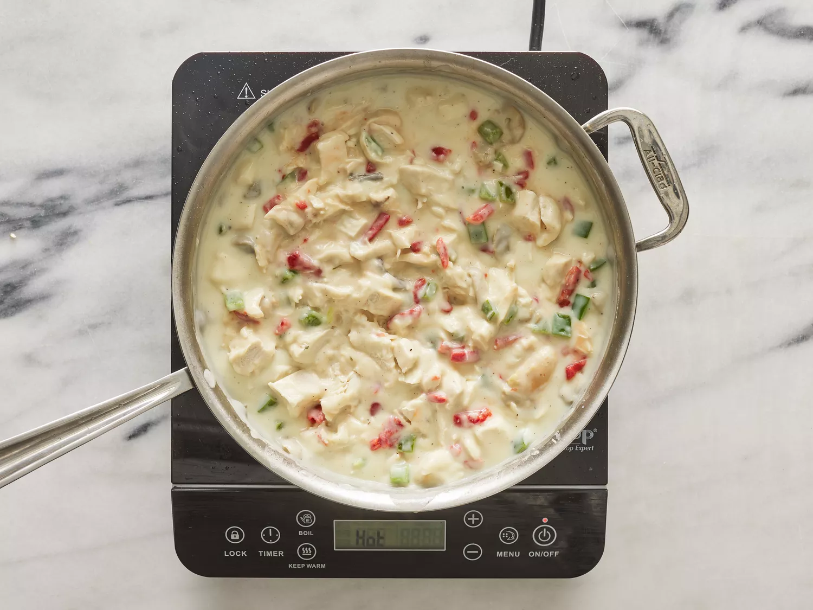
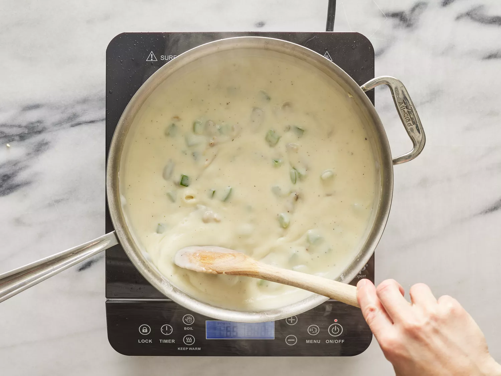
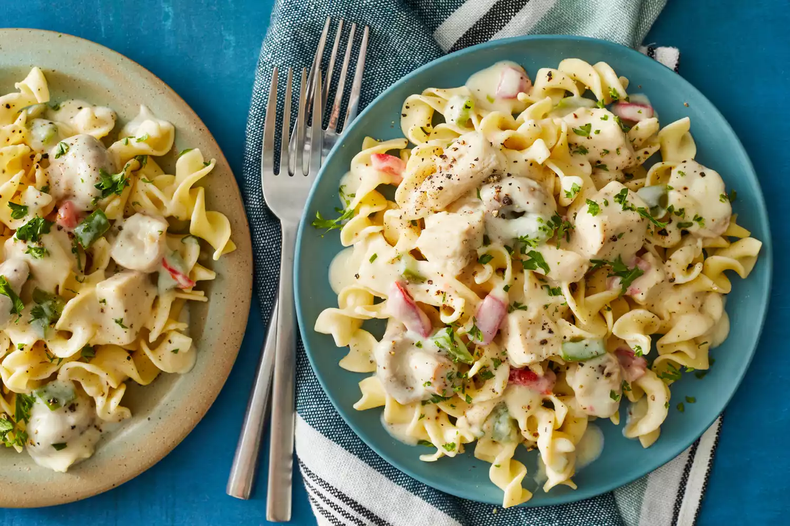

Home
Chicken à la King

Source: WittyRib5876
Description
Chicken à la king is easy and elegant. It's a great way to use leftover chicken or turkey. Can be made ahead and reheated.
The contents of this page is entirely sourced from allrecipes.com
Ingredients and Steps for 7 servings
Ingredients
- 0.5 Cups of butter
- 4.5 Ounces of canned mushrooms - drained and liquid reserved
- 0.5 cups of all-purpose flour
- 1 teaspoon of salt
- 0.25 teaspoons of ground black pepper
- 1.5 cups of milk
- 1.25 cups of hot water
- 1.5 teaspoons chicken bouillon powder
- 4 cooked, boneless chicken breast halves, chopped
- 4 ounces chopped pimento
Steps
- Gather all ingredients.

- Melt butter in a large skillet over medium heat. Add drained mushrooms and bell pepper and cook, stirring, 5 minutes.

- Remove from the heat. Stir in flour, salt, and black pepper. Cook over low heat, stirring constantly, until mixture is bubbly.

- Stir in milk, water, bouillon, and reserved mushroom liquid. Increase heat to medium-high and bring to a boil, stirring constantly. Boil and stir for 1 minute.

- Stir in chicken and pimento and heat through.

- Serve and enjoy!
